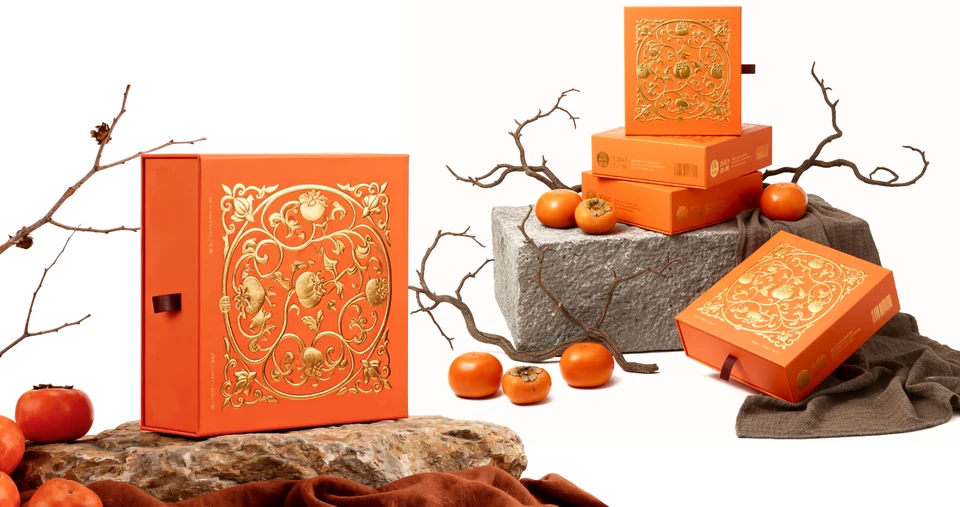
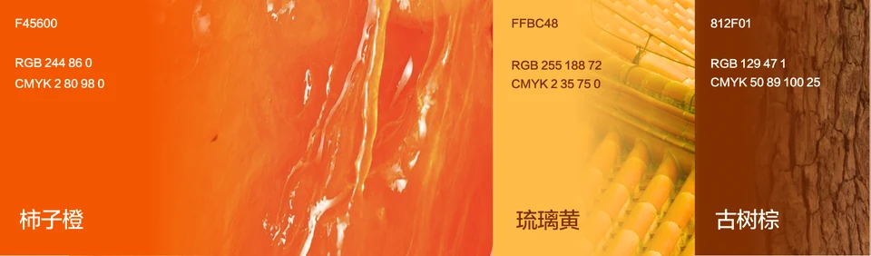
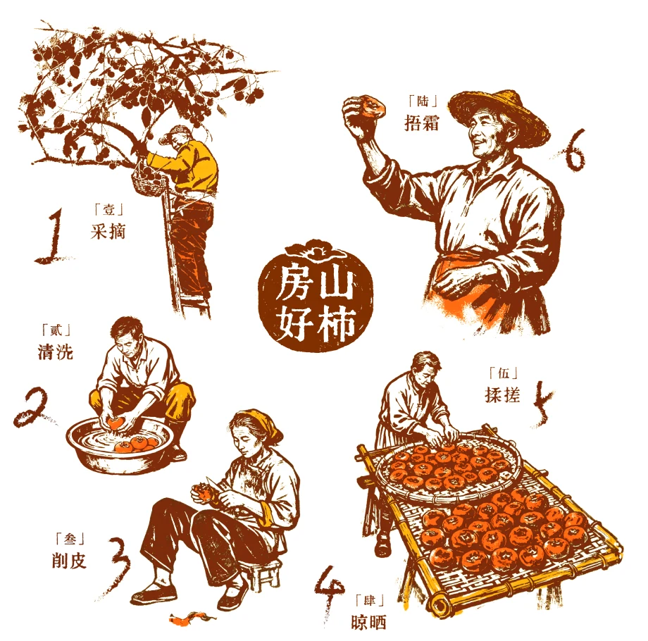
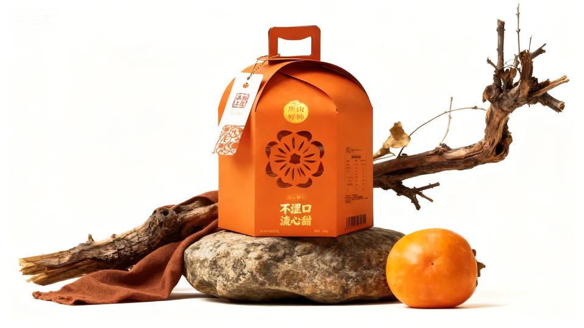
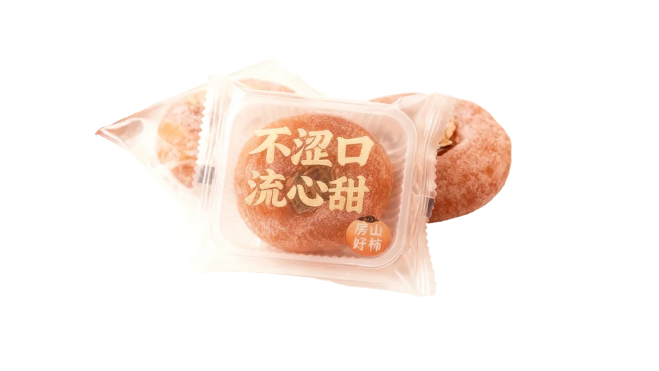
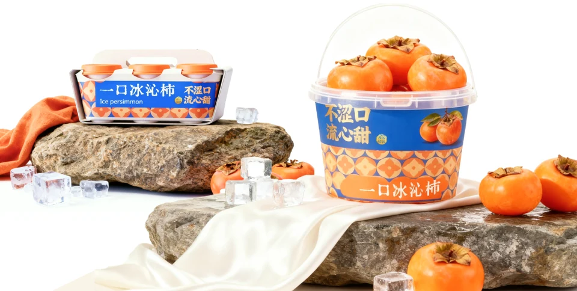
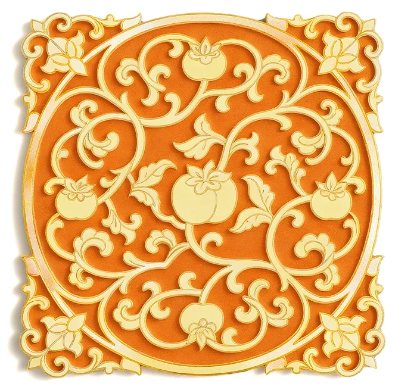
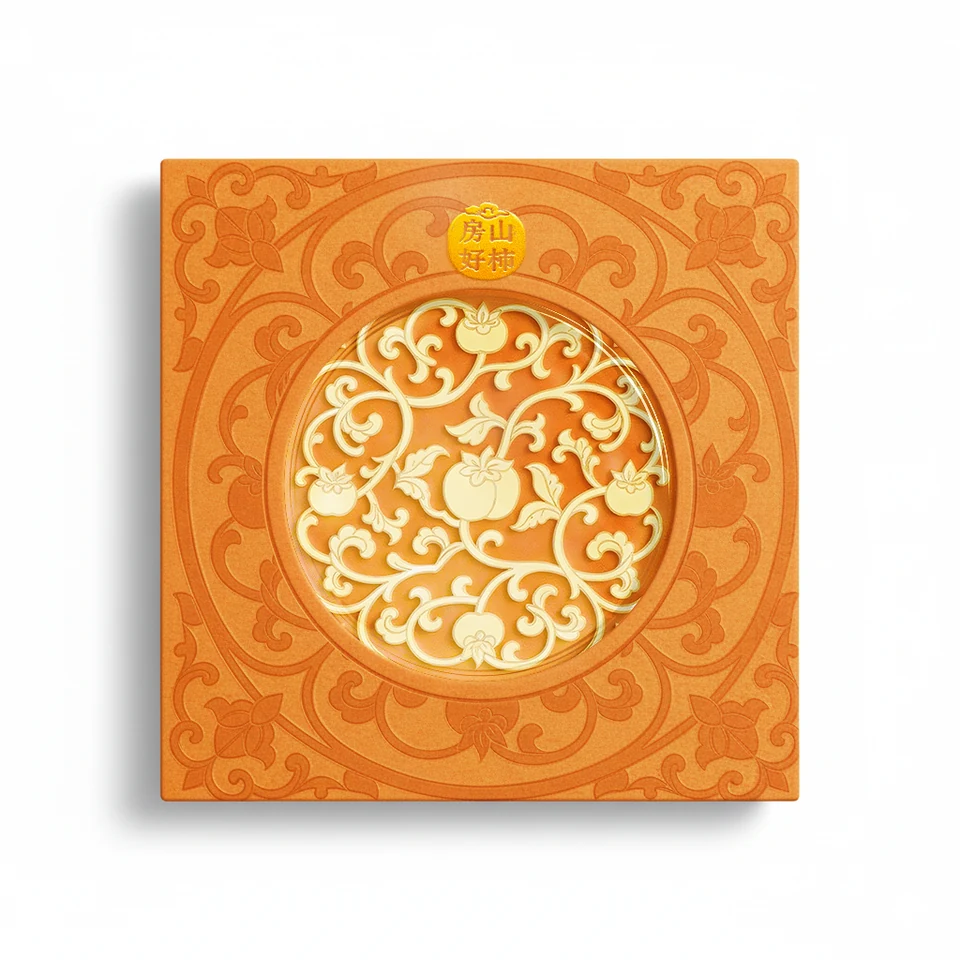
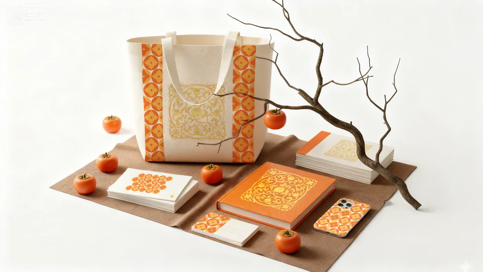

BRAND & PACKAGING / 2025.10
房山好柿
品牌设计 · 包装设计项目类型：包装设计课程作业
完成时间：2025.10

房山好柿是围绕北京房山磨盘柿展开的品牌与包装设计课程项目。设计从地域文化、秋日风味与传统手工制柿工艺出发，将“柿”与“事”的谐音祝愿融入品牌表达，尝试让地方特产通过统一的视觉语言，传递自然、温暖与富有人情味的品牌印象。
前期通过产品特点梳理、SWOT 分析与竞品观察，明确了礼赠与日常消费两类使用场景。品牌主要面向注重品质、工艺细节与文化内涵的消费者，并规划精装礼盒、伴手礼与“一口冰沁柿”三条产品线，以不同的包装体量和视觉表达回应送礼、携带分享及年轻化消费的需求。
01 / VISUAL IDENTITY
品牌视觉

视觉识别以饱满的柿子轮廓为基础，将“房山好柿”四字置于印章式构图中，保留篆刻般的不规则边缘与质朴肌理。色彩采用柿子橙、琉璃黄与古树棕，结合具有刻印感的标题字体，建立温暖而沉稳的视觉基调。柿蒂与缠枝纹样进一步延展为装饰图形，使标志、包装和衍生应用保持连贯。

02 / CRAFT & STORY
手工故事


03 / PACKAGING SERIES
包装系列
精装礼盒以“宫廷贡品”为设计灵感，将柿子融入明清缠枝纹样，以橙色盒身与金色浮雕效果呈现丰收和吉祥的寓意。内盒以分格结构陈列柿饼，并通过不同挂霜程度的排列呈现产品差异；盒盖内侧加入采摘、清洗、削皮、晾晒、揉搓与捂霜的工艺插画，让开盒过程同时成为了解品牌故事的过程。


↔︎ 左右拖动浏览
伴手礼包装围绕“开窗见喜，柿柿如意”展开，从传统园林花窗的借景方式中获得灵感，以镂空窗口露出内部产品，结合提手结构与独立包装，形成便于携带和分享的礼赠形式。“一口冰沁柿”则在原有视觉系统中引入清凉的蓝色，与橙色柿蒂纹样形成对比，通过桶装与小杯组合表现更轻快、现代的产品形象。



04 / BRAND APPLICATIONS
衍生与线上应用
品牌图形还被应用于冰箱贴、帆布袋、笔记本、卡片及手机壳等衍生设计，并延伸至公众号、小红书与直播间的线上展示提案。项目将产地故事、手工工艺与产品包装联系起来，探索地方农产品从单一商品走向完整品牌体验的表达方式。




